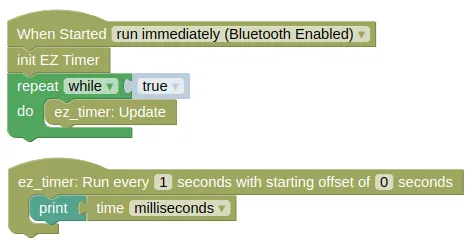
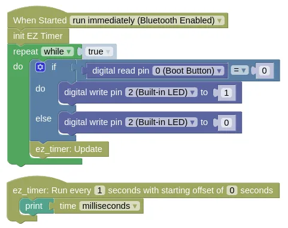
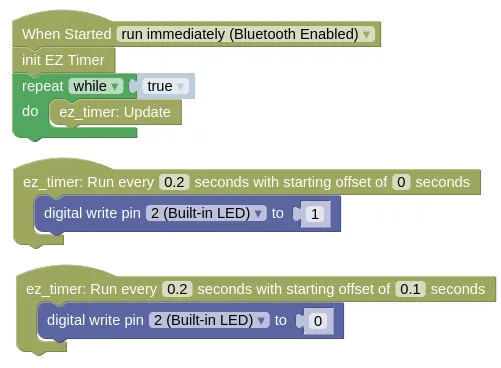

EZ Timer
We often need to run things at regular interval (eg. print a message or blink an LED every second).
Using a sleep command is an easy solution, but during the sleep, the microcontroller cannot do anything else.
This can be a problem with certain hardware (eg. GPS needs to run update frequently to read data, gyro needs the same to calculate headings).
It can also be an issue if you need to read sensors or inputs (ie. you can't check if a button is pressed until the sleep ends).
The EZ Timer extension allows you to run things at regular intervals or after a delay, but without using sleep.
sleep allows you to build devices that can do multiple things simultaneously (eg. play music, animate LEDs, and detect button presses, all at the same time).
Code
We have a few examples here.
-
Basic Demonstrates the basic use of EZ Timer.
-
Simultaneous Demonstrates doing two things simultaneously (detect button press and print to monitor).
-
Offset Demonstrates using offset to blink an LED.
-
Gyro / GPS Demonstrates using EZ Timer to update the Gyro and GPS frequently, while printing the result out infrequently. You'll need to connect a Gyro and GPS to run this example.
Blocks
Basic

Simultaneous

Offset

The second timer block runs at the same frequency as the first (0.2s), but the offset of 0.1s makes it start slightly later.
Gyro / GPS

Python
Basic
import ez_timer
import time
def print_time():
print(time.ticks_ms())
ez_timer_obj = ez_timer.Timer()
ez_timer_obj.set_interval(print_time, 1)
while True:
ez_timer_obj.update()
Simultaneous
import ez_timer
import time
from ioty import pin
def print_time():
print(time.ticks_ms())
ez_timer_obj = ez_timer.Timer()
ez_timer_obj.set_interval(print_time, 1)
while True:
if pin.digital_read(0) == 0:
pin.digital_write(2, 1)
else:
pin.digital_write(2, 0)
ez_timer_obj.update()
Offset
import ez_timer
from ioty import pin
def led_on():
pin.digital_write(2, 1)
def led_off():
pin.digital_write(2, 0)
ez_timer_obj = ez_timer.Timer()
ez_timer_obj.set_interval(led_on, 0.2)
ez_timer_obj.set_interval(led_off, 0.2, offset=0.1)
while True:
ez_timer_obj.update()
Gyro / GPS
import machine
import mpu6050
import gps
import ez_timer
def print_readings():
print(mpu6050_device.angle_z())
print(gps_device.get_lat())
print(gps_device.get_lng())
i2c0 = machine.I2C(0, freq=100000)
mpu6050_device = mpu6050.MPU6050(i2c0, 104)
mpu6050_device.calibrate_gyro()
uart1 = machine.UART(1, baudrate=9600, tx=4, rx=5)
gps_device = gps.GPS(uart1)
ez_timer_obj = ez_timer.Timer()
ez_timer_obj.set_interval(print_readings, 1)
while True:
mpu6050_device.update_angle()
gps_device.update()
ez_timer_obj.update()
Results
Basic
You should see the time (...in ms) printed in the monitor every second.
Simultaneous
Same as in Basic, you should see the time (...in ms) printed in the monitor every second. If you press the boot button, the built-in Blue LED should light up immediately.
Offset
You should see the built-in Blue LED blink rapidly (...5 times per second).
Gyro / GPS
You should see the gyro heading and GPS position printed in the monitor every second.
Timer - easy to use, non-blocking timer
Constructors
ez_timer.Timer()
Create a Timer object.
Returns a Timer object.
Methods
Timer.set_interval(cb, interval, offset=0, count=-1)
Run the provided callback function at the specified interval.
The arguments are:
-
cbAfunction. EZ Timer will run this callback function at the specified interval. -
intervalAfloatrepresenting the number of seconds between each run of the callback function. -
offsetAfloatrepresenting the number of seconds to delay before the start of this timer. -
countAnintegerrepresenting the maximum number of times to run this timer. A-1means that the timer can run for an unlimited number of times.
Returns a None.
Timer.set_timeout(cb, interval)
Run the provided callback function after the specified timeout.
Unlike in the set_interval method, the callback function will only run once.
The arguments are:
-
cbAfunction. EZ Timer will run this callback function at the specified interval. -
intervalAfloatrepresenting the number of seconds between each run of the callback function.
Returns a None.
Timer.update()
Updates all the timers.
You must run this frequently for EZ Timer to work. The callback functions can only run during an update.
Returns a None.